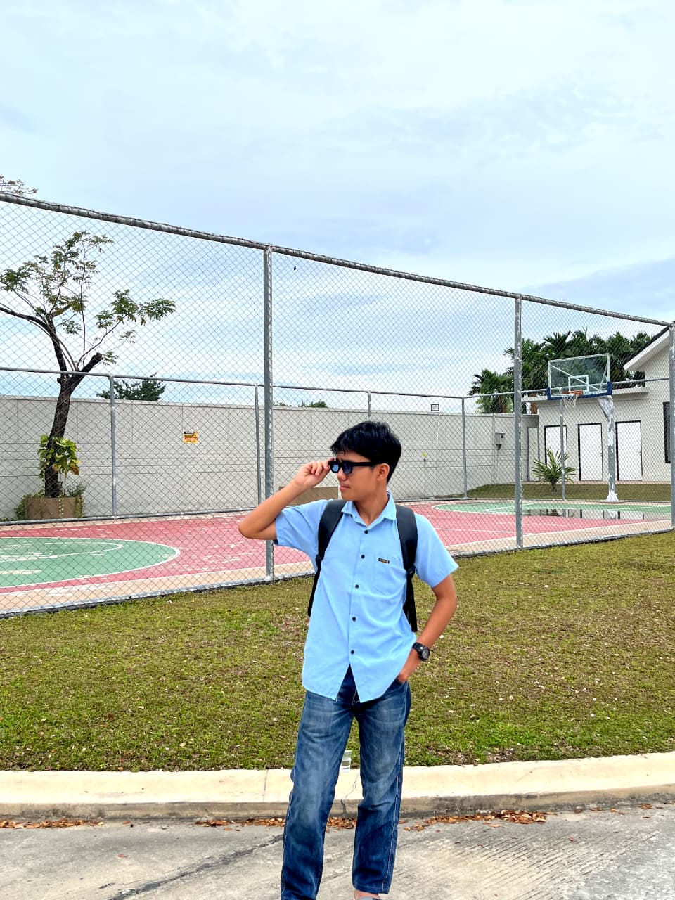

Saya adalah siswa kelas 12 jurusan Pengembangan Perangkat Lunak dan Gim (PPLG). Saat ini saya sedang melaksanakan Praktik Kerja Lapangan (PKL) di Diskominfo Kabupaten. Saya memiliki minat besar dalam dunia Web Development, Python, Laravel, JavaScript, Database, serta Cyber Security.

Halo! Saya M. Hafiz Haikal, seorang siswa SMK jurusan Pengembangan Perangkat Lunak dan Gim (PPLG). Saya senang belajar hal-hal baru terutama di bidang teknologi. Saya sudah mempelajari HTML, CSS, JavaScript, Python, Laravel, dan MySQL. Saat ini saya juga mulai mendalami Cyber Security karena saya tertarik memahami cara menjaga keamanan sistem dan jaringan. Selain itu saya senang membuat website modern, aplikasi sederhana, serta game menggunakan Python. Saya selalu berusaha meningkatkan kemampuan saya melalui latihan dan pengalaman selama PKL di Diskominfo Kabupaten.
Membuat website portofolio modern menggunakan HTML, CSS dan JavaScript.
Membuat website biodata yang responsif dengan tampilan menarik.
Membuat game sederhana menggunakan Python dan Pygame.
Membuat aplikasi CRUD berbasis Laravel dan MySQL.
📍 Riau, Indonesia
🎓 SMK Jurusan PPLG
💻 Web Developer Beginner
🛡 Cyber Security Enthusiast